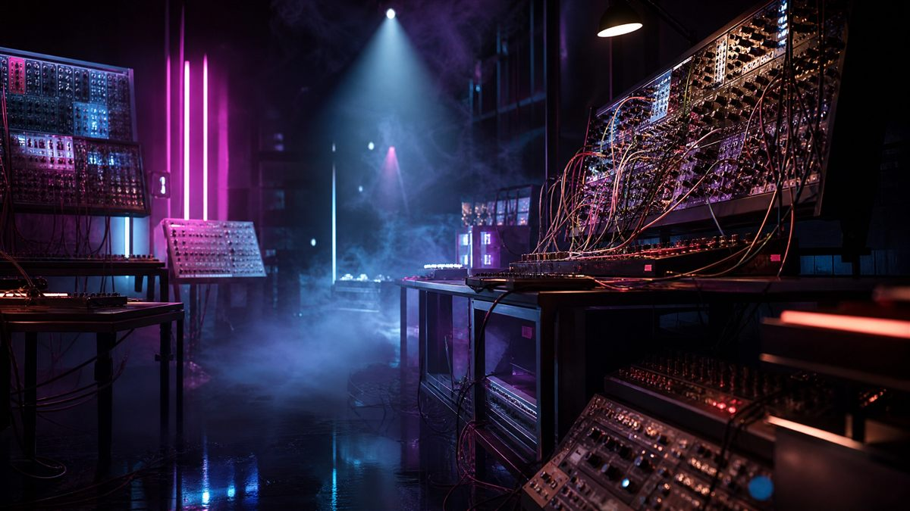

Arca се завръща с албума „XXXXX“ след пет години мълчание

Венецуелската артистка, продуцентка и вокалистка Arca обяви новия си пълноформатен албум „XXXXX“, който излиза на 31 юли през XL Recordings — първата ѝ студийна плоча от пет години насам, след завършването на амбициозната ѝ поредица „KiCk“. Новината беше потвърдена от няколко водещи музикални издания, сред които The FADER и Consequence.
Двучасово представяне на живо от седем точки в Барселона
Вечерта на 23 юли Arca отбеляза предстоящия албум с „Diva.Experimental“ — двучасов livestream, излъчен на живо от седем различни локации в Барселона по Twitch и YouTube в 21:30 ч. централноевропейско лятно време. Изживяването включи непубликувани преди песни от новата плоча и визуална концепция на германския фотограф Даниел Занвалд, работил по обложката на „MOTOMAMI“ на Розалия, съвместно със стилиста Акийм Смит.
Според описанията на изданията, „XXXXX“ — заглавие, което препраща към предишните ѝ експериментални миксетейпи „@@@@@“ (2020) и „&&&&&“ (2013) — залага на „противоречието като основна методология“ и е описан като по-тъмен, по-агресивен и по-неохотен да се вмести в утвърдена форма звук, наситен с 16 песни.
Артист, чийто почерк е самата непредвидимост
От края на 2021 г. насам Arca не е стояла настрана от музиката — издаде двойния сингъл „Puta“/„Sola“, съвместната песен „Chama“ с Токиша, направи ремикси за Адисън Рей, Робин и Хикару Утада, а съвсем наскоро участва в продукцията на „Confessions II“ на Мадона. Именно тази непрестанна работа между собствените ѝ проекти и чуждите визии прави завръщането ѝ с цялостен авторски албум толкова очаквано в електронната сцена по света.
„XXXXX“ затваря пълен творчески кръг за артистка, чийто почерк — сблъсъкът между крехкост и брутализъм, между поп мелодия и звукова деконструкция — промени представата какво може да бъде електронната музика през последното десетилетие. С избора да представи новите песни не в студийна кулиса, а разпръснати из седем реални пространства на родния ѝ за творчеството град Барселона, Arca още веднъж напомня, че за нея албумът никога не е просто колекция от файлове, а изживяване, което трябва да се усети физически, преди да бъде чуто дигитално.
Arca превръща всяко късче звук в лична изповед. Твоята история също заслужава песен, която звучи само като теб.
Разкажи я с глас за 2 минути — от 9,90 €